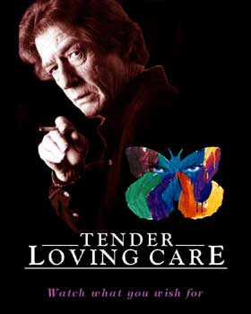
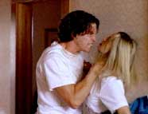

|
 
- - - - - - - - - -
Mind Games
While most interactive software falls into the "game" category where the main activities usually involve annihilating alien spaceships, slaying monsters and rampaging through city streets, there is at least one non-game interactive product for the rest of us.
- - - - - - - - - -
by Carri Bugbee
The Future of Entertainment?
 E'VE ALL BEEN THERE. Sitting in a dark movie theater. Thoroughly engrossed in the story. Then, one of the characters does something really stupid. You know, something you would never do. You're immediately distracted by this blunder. You begin thinking to yourself, "This is so unbelievable. There's no way that guy wouldn't know his wife was cheating on him! Nobody but an idiot would fall for her ridiculous excuses!" Or you're muttering under your breath, "Oh, yeah, that makes sense. Anybody with half a brain could figure out what this guy is up to! But noooo, not them. They're completely oblivious!" E'VE ALL BEEN THERE. Sitting in a dark movie theater. Thoroughly engrossed in the story. Then, one of the characters does something really stupid. You know, something you would never do. You're immediately distracted by this blunder. You begin thinking to yourself, "This is so unbelievable. There's no way that guy wouldn't know his wife was cheating on him! Nobody but an idiot would fall for her ridiculous excuses!" Or you're muttering under your breath, "Oh, yeah, that makes sense. Anybody with half a brain could figure out what this guy is up to! But noooo, not them. They're completely oblivious!"
Sometimes you sit through it, patiently waiting for the film to redeem itself. Other times, you get so irritated, you just want to reach out, grab the character (or maybe the writer and director) by the shoulders, and say: "What were you thinking? I can't buy this! Wake up and get real!"
... the course of action will be plotted by your psyche.
|
Well, now you can. Sort of. With "Tender Loving Care", an interactive DVD movie from Aftermath Media, you'll finally be in a position to exert a little influence. Though there is a caveat. You will be able to control the direction of the story, but where you end up may still be a surprise because the course of action will be plotted by your psyche.
Heady stuff in the name of entertainment, to be sure. But don't worry, this has nothing to do with telekinesis and the software doesn't include an embedded link to the Psychic Friends Network -- although you should be prepared for a few probing questions. Basically, it's harmless fun and small sacrifice for the opportunity to engage in an intriguing, mind-opening experience that just may be the future of entertainment -- or at least Aftermath's vision for the future of entertainment.
...an intriguing, mind-opening experience that just may be the future of entertainment...
|
After creating "The 7th Guest", one of the most successful CD-ROM games ever, and the record-setting follow-up, The 11th Hour, Aftermath's creative team has learned a thing or two and may be in as good a position as any to predict what the future of entertainment might be. In fact, Aftermath has firmly established itself as a leading-edge creator of both content and technology. With the debut of "Tender Loving Care" (TLC), the company could now redefine the standard for interactive cinematic storytelling.
Voyeurism as Interaction
 OB LANDEROS, Aftermath's Co-founder and Artistic Director, describes TLC as "The first movie that watches you while you are watching it." Which actually sounds more like Big Brother's sinister idea of entertainment than the latest production hatched by a bunch of creative types in the peaceful Rogue River Valley. But marketing hyperbole aside, TLC is vastly different from anything else currently available or possibly even in development within the interactive entertainment industry. OB LANDEROS, Aftermath's Co-founder and Artistic Director, describes TLC as "The first movie that watches you while you are watching it." Which actually sounds more like Big Brother's sinister idea of entertainment than the latest production hatched by a bunch of creative types in the peaceful Rogue River Valley. But marketing hyperbole aside, TLC is vastly different from anything else currently available or possibly even in development within the interactive entertainment industry.
 What sets TLC apart is that the action -- and interaction -- isn't defined by what room a character walks in, how she opens a secret passageway, what bridge he takes, who she encounters along the way, or what he blows up. Instead, it revolves around more true-to-life (and by many people's standards, more compelling) scenarios based upon how human beings perceive their circumstances, how they respond to uncomfortable situations, what motivates them to act or feel a certain way, and how they are affected by the actions of others.
The first movie that watches you while you are watching it.
|
Even more intriguing, the characters and plot elements of TLC are guided by the viewer's own personal comfort level as indicated by his or her perceptions, predilections, and aversions. The program is structured to develop a psychological profile of the viewer through a series of exit polls and thematic apperception tests (TATs) placed after each episode in the story. TATs are psychological tests commonly used to measure personality characteristics through projective techniques focusing on dominate drives, emotions, sentiments, complexes, attitudes, and conflicts.
...viewers may be delighted to discover that they can also snoop into a folder with their own name on it to see how their personality profile is being developed...
|
In the interest of authenticity, Aftermath did, indeed, consult with a professor of psychology to develop TATs specifically for the project. As the viewer responds to these tests, the story "corrects itself" to reflect the viewer's preferences -- albeit with a finite number of options. Even the characters' dispositions are modified so that if the viewer doesn't like a particular character, he or she will continue to become less likable as the plot unfolds. Some -- though probably not all -- viewers may be delighted to discover that they can also snoop into a folder with their own name on it to see how their personality profile is being developed as the story progresses. Although Aftermath is quick to point out that the analysis is for entertainment purposes only.
 Next page | A Focus Group of One Next page | A Focus Group of One
1, 2
|